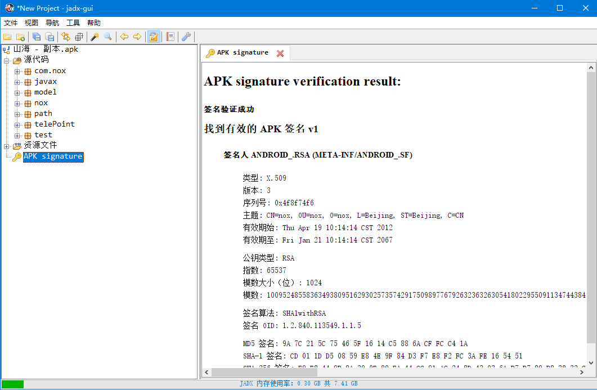
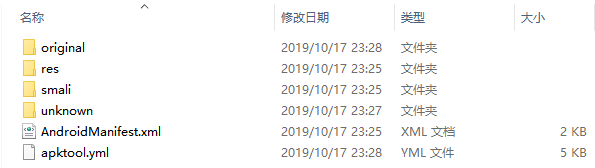
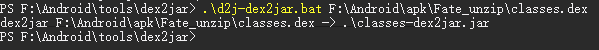
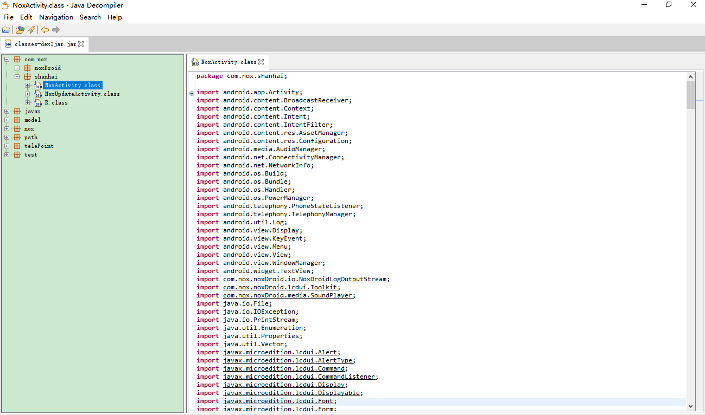

Android apk文件反编译
写在前面
- jadx
- ApkTool
- dex2jar
- JD-GUI
个人推荐jadx，方便且功能强大。
jadx相当于瑞士军刀。ApkTool，dex2jar和JD-GUI是一套组合拳。
相应文件解释
Apks 仅仅是包含资源和汇编 Java 代码的 zip 文件
解压后文件目录
.dex代码文件：它是classes文件通过 DEX 编译后的文件格式，用于在 Dalvik 虚拟机上运行的主要代码部分；resources资源文件：以 resources 以及 res 目录为代表的 Android 程序中所需要的一些资源，如图片资源，颜色资源，字符串，布局等；assets文件：assets目录下存放的是原生资源文件，比如在里面存放字体，铃声等；manifest清单文件：以AndroidManifest.xml为代表的 Android 清单文件，清单文件向 Android 系统提供应用的必要信息，系统必须具有这些信息方可运行应用代码。
工具
jadx
下载jadx-gui（有命令行和图形化界面两种选择），无需安装即可运行，直接将.apk文件拖入即可使用。

ApkTool
AptTool 是什么?
A tool for reverse engineering Android apk files，安卓逆向工程利器。
dex2jar
将 dex 文件转换为 jar 文件的工具
dex2jar 下载
JD-GUI
用于查看 jar 包内容
ApkTool 的使用
基础命令: apktool d Fate.apk

使用 apktool 反编译出的源代码为.smali文件，并不利于阅读(至少对于没接触过 smali 语法的人来说)
dex2jar 的使用
使用 dex2jar 工具将 dex 反编译为 jar 文件
使用命令：d2j-dex2jar path/to/classes.dex

你将在当前目录下得到classes-dex2jar.jar文件
jd-gui 的使用
查看 classes-dex2jar.jar 文件

写在后面
IntelliJ IDEA 通过导入 jar 包可以直接查看源码
comment:
- Valine
- LiveRe
- ChangYan